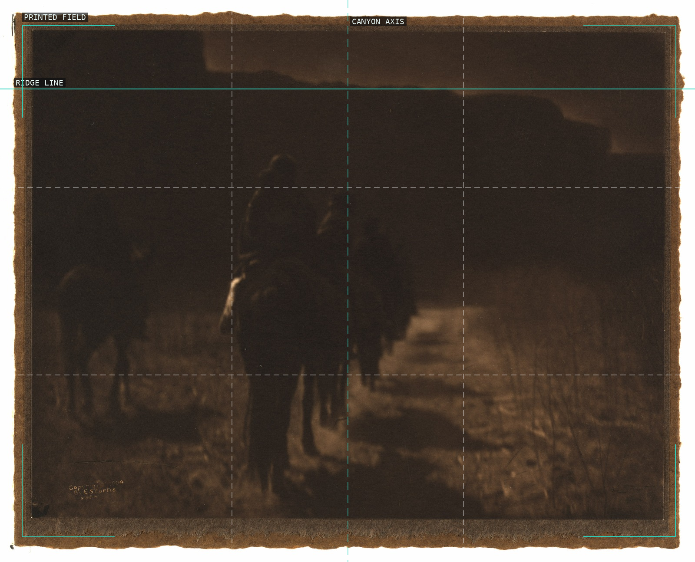
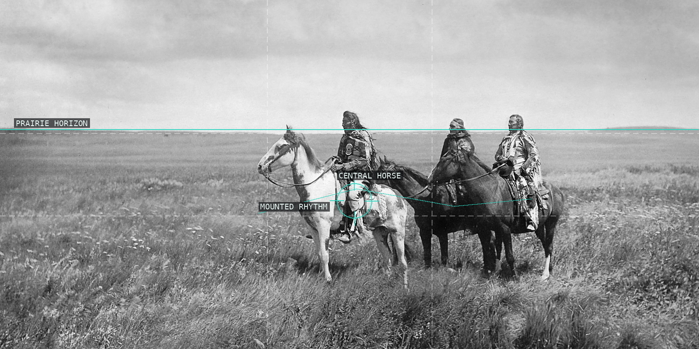
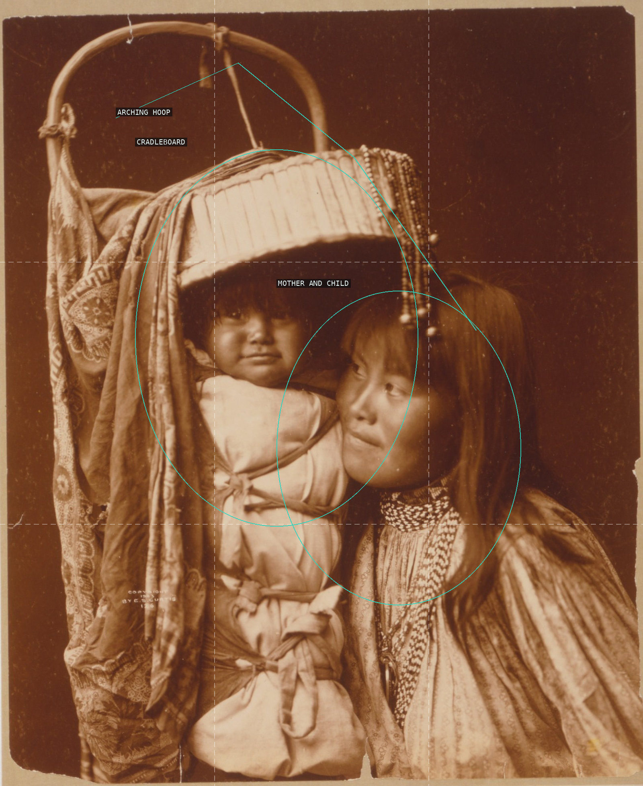
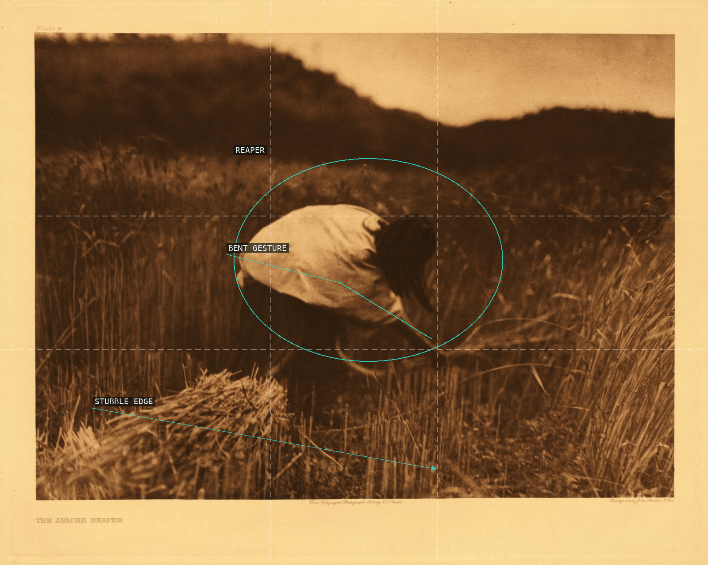
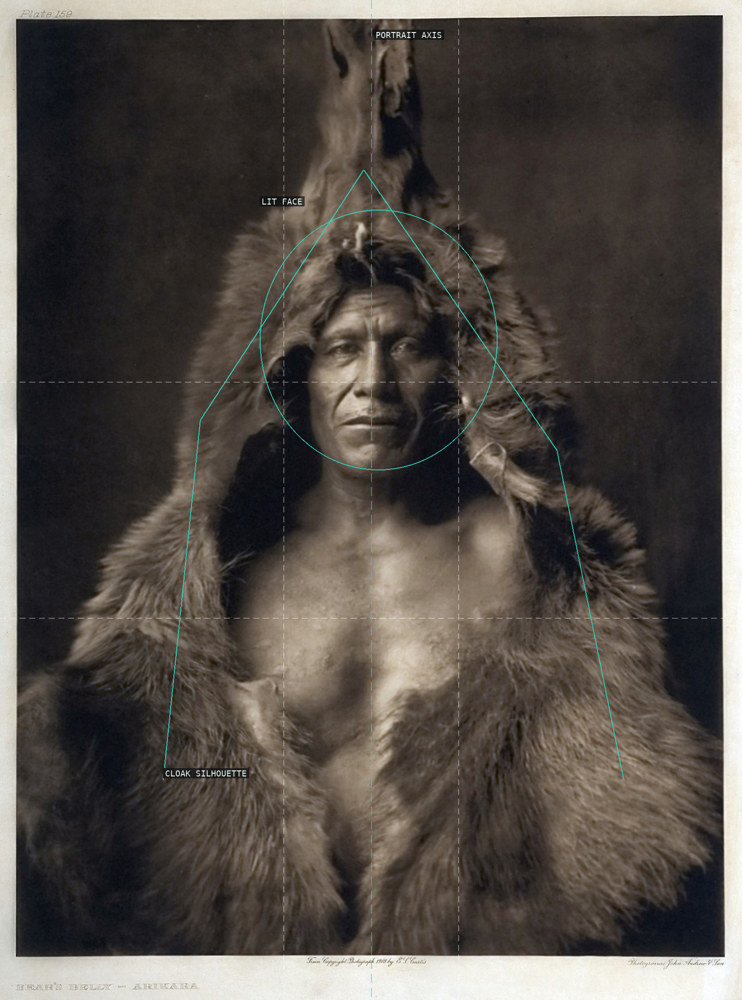
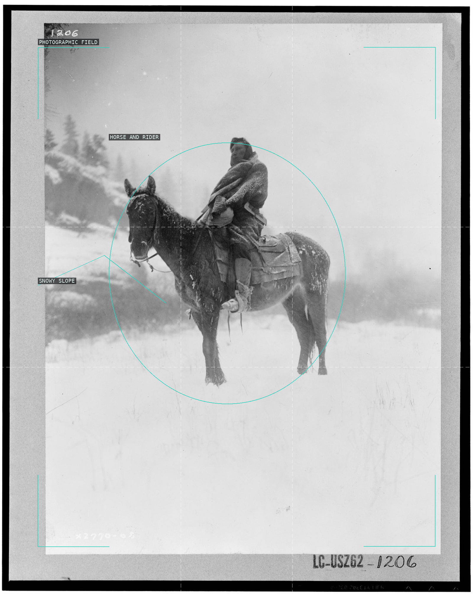
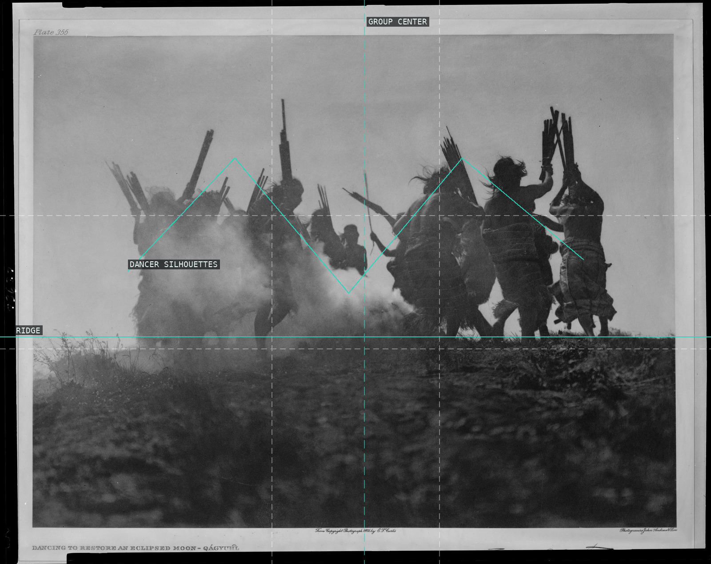
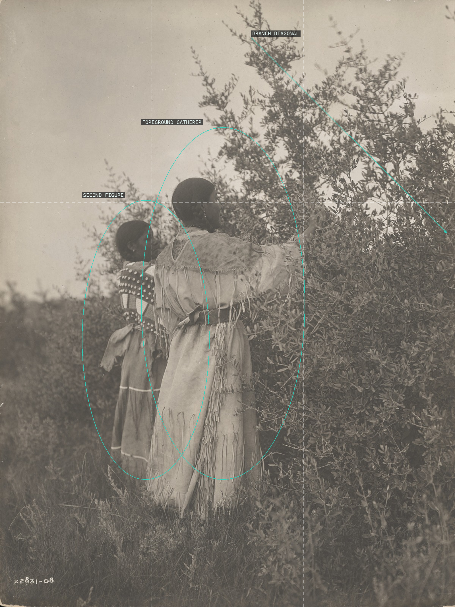
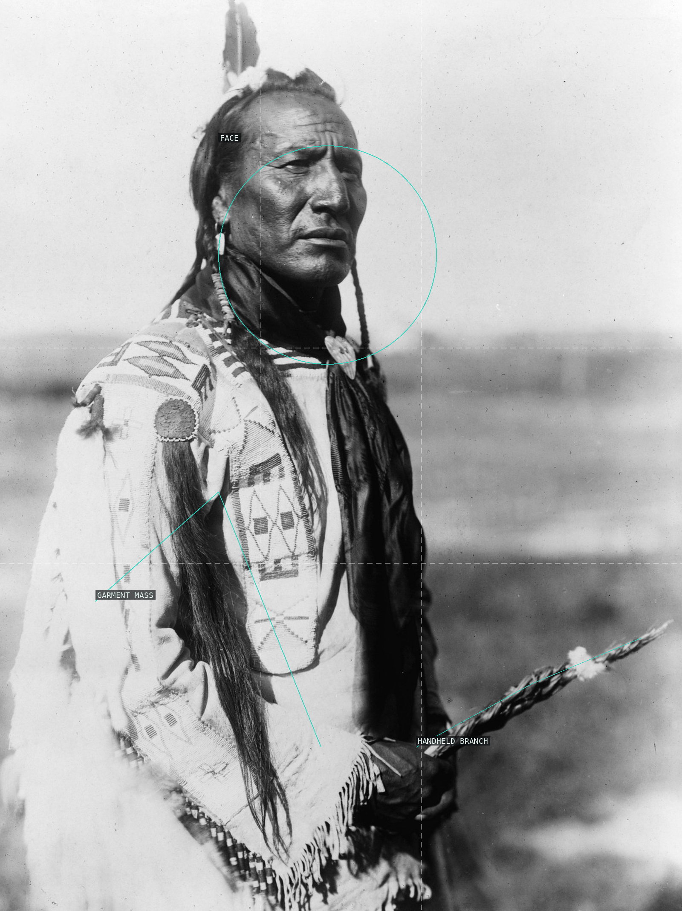

A centered canyon corridor contracts around the receding riders.

A low horizon gives the mounted group a broad, lateral stage.

The cradleboard's arch encloses a compact pair against a dark field.

A bent working figure is held between a low crop edge and dark hillside.

The face holds still at the center of a heavy fur surround.

A dark horse-and-rider mass is suspended in the open snow field.

A row of moving silhouettes cuts across a low, smoky ridge.

Two figures repeat a reaching motion through a dense berry field.

Lodges and their reflections turn the waterline into the central hinge.

A close portrait is organized by the face, robe mass, and diagonal branch.